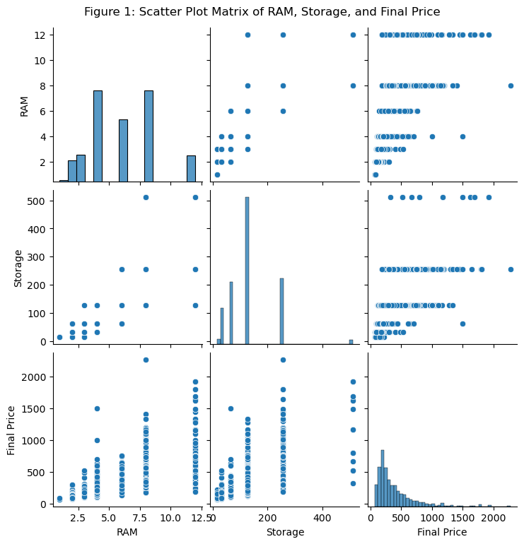
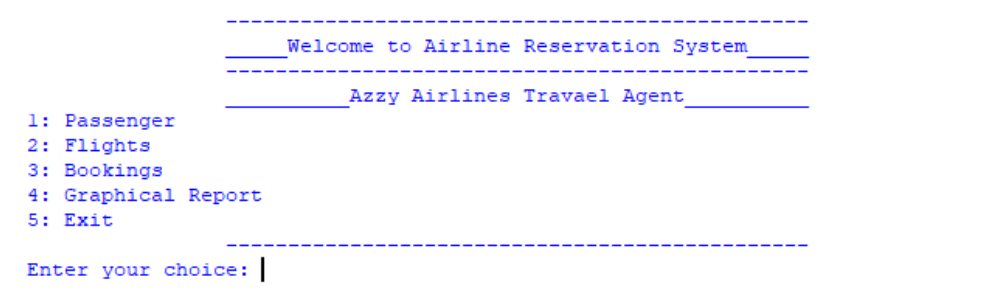
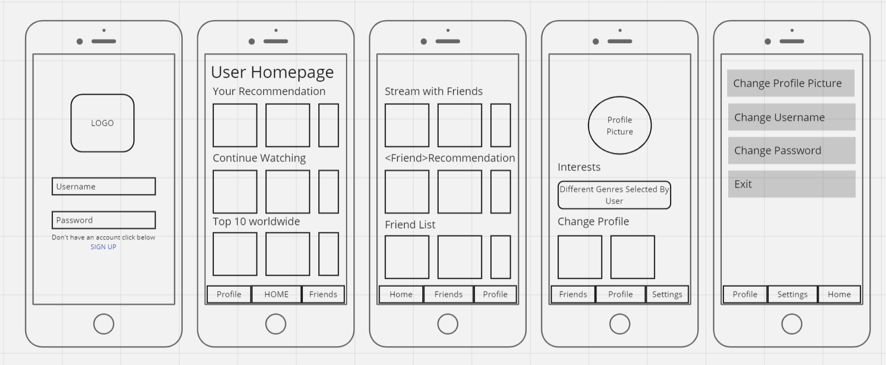

Alima Noor
Portfolio
Welcome to Alima Noor's Portfolio! I am a computer science student
passionate about designing innovative solutions, with experience
in database systems, software development, data analysis,
and UI/UX design.
new Date()
I have undertaken diverse projects showcasing my skills in database
design, software development, data analysis, and user interface
prototyping. These include a MySQL-based job tracking database
system for students and alumni, enhancing employer-candidate
communication through normalization and advanced features like
triggers. I developed a Python and MySQL airline reservation system
to streamline booking operations and improve user experience.
Additionally, I conducted exploratory data analysis on smartphone
data using multivariate visualizations, uncovering key trends in
specifications and pricing. Lastly, I designed a Figma prototype
for a mobile streaming app that allows users to connect with friends
and stream shows or movies together, fostering interactive entertainment.
About

This project aims to design a relational database for job tracking, serving both current students and alumni. Built on MySQL, it addresses the challenge of accessing centralized job information,
ensuring data integrity and performance through relational design and normalization. The system also includes triggers and stored procedures for efficiency. Ultimately, it enhances communication
between employers and candidates, supporting professional growth in line with the university's mission.

This project applies exploratory data analysis (EDA) using multivariate visualization techniques to a smartphone dataset sourced from the Spanish website PC Componentes. The dataset includes detailed
information on various smartphones, such as RAM, storage, and pricing, and is valuable for researchers and data analysts in the smartphone industry. Collected via Power Automate, the data is analyzed
using visual methods like scatter plot matrices and trellis plots. Key findings include a positive correlation between RAM/storage and final price, but no strong correlation between RAM and storage.

This project describes the development of a software application for managing airline reservations, built using Python and MySQL for database management. The system supports key functions such as adding
passenger information, searching for flights, making bookings, updating records, and managing data. Its goal is to streamline the booking process and improve the user experience for both novice and experienced
users.

The goal of this prototype is to develop an intuitive streaming application organized into four key sections: Home, Friends, Profile, and Settings. Users are first prompted to log in or sign up. After logging in, they are directed to a homepage with these four categories easily
accessible at the bottom. The Home section includes features like personalized recommendations, a "continue watching" option, and a top 10 list. The Friends section promotes collaborative streaming, offering features such as watching together, friend recommendations, and a friend list.
The Settings section allows users to personalize their experience, including the ability to change profile pictures. This simple, user-friendly layout ensures easy navigation and a smooth experience.